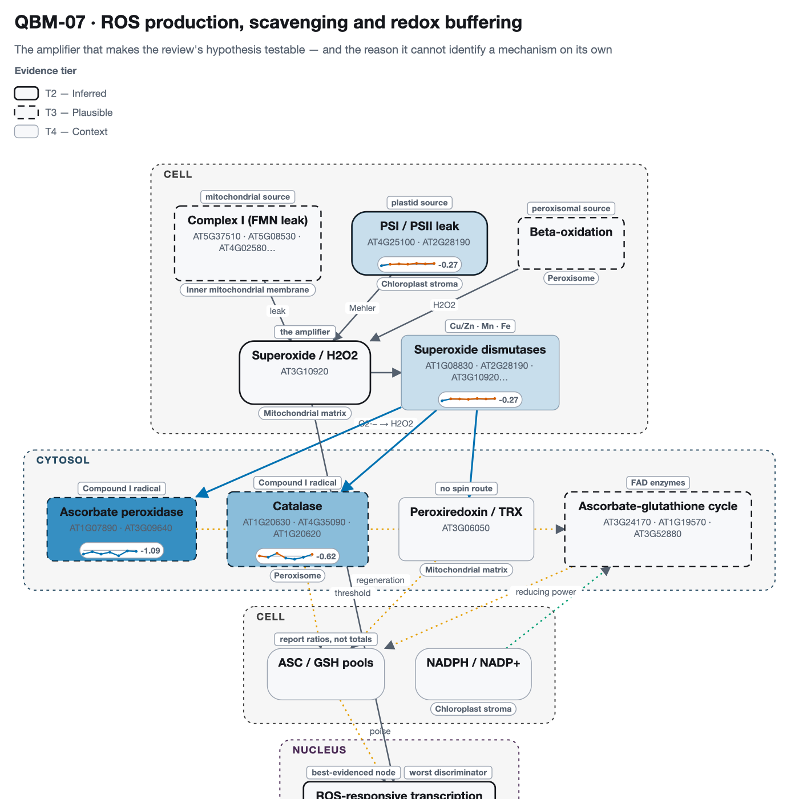
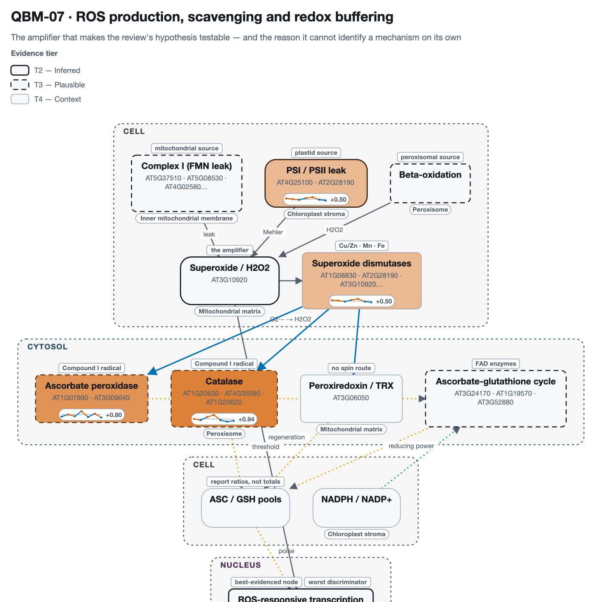
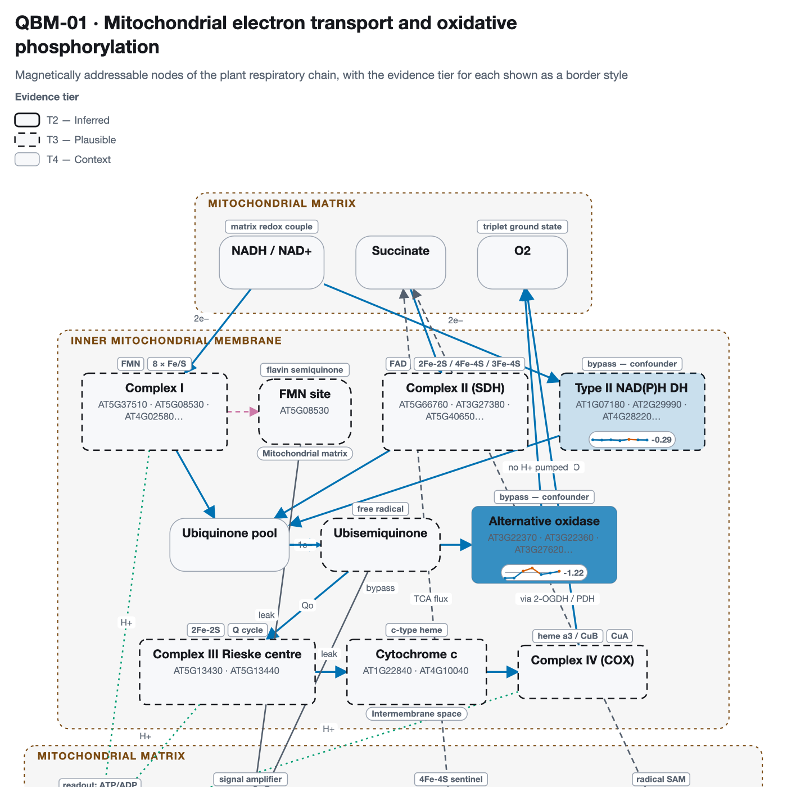
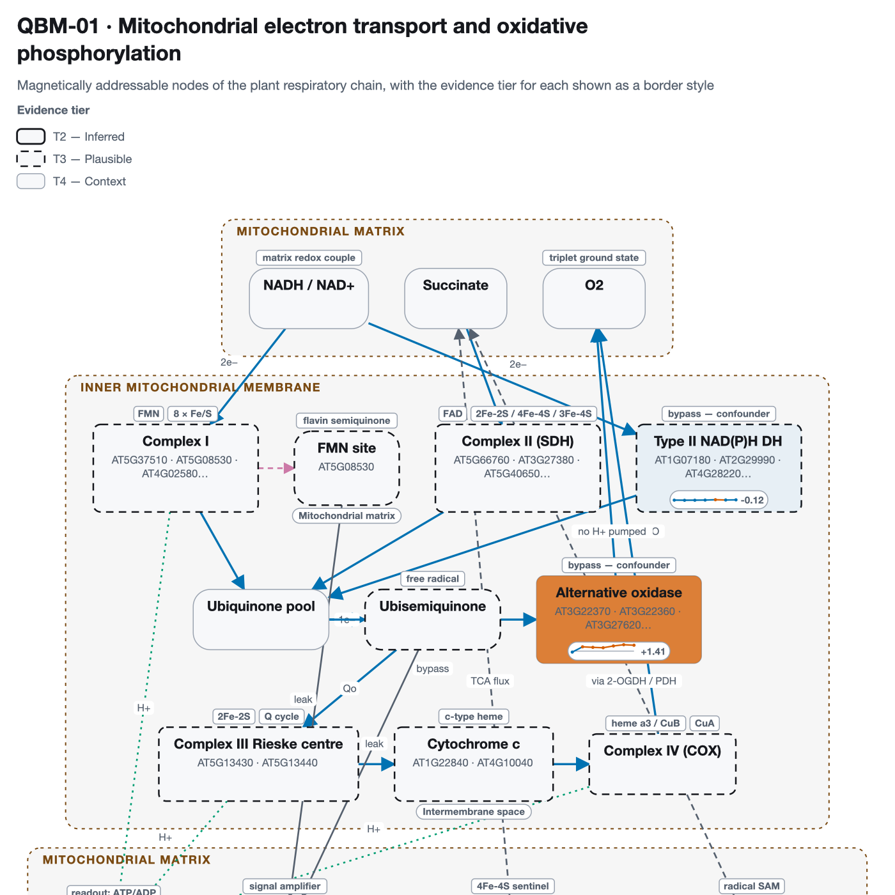

A 7-point near-null-field time course — 10 min, 1 h, 2 h, 4 h, 24 h, 48 h, 96 h — in roots and shoots, projected onto the redox and respiratory maps. Every other overlay in this atlas is a single snapshot; this one is a trajectory, which is the only way to see a node that goes down and then comes back.
Source: Parmagnani, Mannino & Maffei (2022), Biomolecules 12(12):1824, doi:10.3390/biom12121824 (PMC9775259), Arabidopsis thaliana.
These are the authors' published results, not a reanalysis. No raw data was deposited in any public repository. The article's Data Availability Statement reads, in full: “Data are available as supplementary tables and further data can be provided upon request”
So nothing on this page can be recomputed, re-thresholded or re-tested from source
data. What is drawn is what the authors chose to report, read out of
Table S2.xlsx and re-projected onto the maps. That is a weaker
provenance than the NASA OSDR pages in this atlas, which rest on processed data anyone
can download, and it is labelled differently throughout:
published_results.
near-null magnetic field (~30 nT) against the local geomagnetic field (20–60 µT), generated in a triaxial Helmholtz coil system and monitored with a three-axis magnetometer. Values are Parmagnani's reported
fold change for NNMF-grown plants relative to GMF-grown controls, as
mean ± SD.
The scale matters more than it looks. The published values are
ratios — 1.0 means no change — while every overlay in this atlas expects log2,
where 0.0 means no change. Feeding the ratios in directly would have coloured every
unchanged gene as strongly upregulated, and the figure would have looked completely
normal. The conversion happens in qbio.papers.Series.to_log2, the SD is
carried through the same transform rather than left in the wrong units, and
qbio.project.project_series refuses a series that is still on a ratio
scale.
The parse is complete: 2,716 cells read,
0 blank, 0 rows without a usable locus.
The identifiers in the source are written At1g01980.1 — lowercase
g, with a transcript suffix — so a naive AGI pattern matches
none of them; normalisation is done in the parser rather than left to
each caller.
Each node is tinted by its most extreme timepoint and carries a sparkline of the whole trajectory: the colour says how far it moved, the line says when. A node with no measurement is left unfilled, which is not the same as a measured zero. Vermillion is above no-change, blue below, and the flat line through each trace is log2 0.

3 of 4 nodes reverse direction during the course (CATALASE, PLASTID_ROS, SUPEROXIDE_DISMUTASES) — behaviour no single-contrast overlay can represent.
Values are the authors' published results from Parmagnani, Mannino & Maffei (2022), Biomolecules 12(12):1824 (doi:10.3390/biom12121824), not a reanalysis: NNMF-grown plants relative to GMF-grown controls. No raw data was deposited — the Data Availability Statement reads “Data are available as supplementary tables and further data can be provided upon request”. Reported as fold change; the authors treat a gene as regulated only outside their own thresholds of ≥2 and ≤0.5, which this page preserves rather than re-thresholding. roots, 7 timepoints (10 min, 1 h, 2 h, 4 h, 24 h, 48 h, 96 h). 4 of 8 identifier-bearing nodes received a series (50%); 4 nodes carry no gene identifier and cannot. multi-locus nodes aggregated by extreme at each timepoint. values were published as fold change and converted to log2 for display; the reported SD is carried through the same transform. 3 node(s) reverse direction during the course (PLASTID_ROS, SUPEROXIDE_DISMUTASES, CATALASE), which no single-contrast overlay can show.

4 of 4 nodes reverse direction during the course (ASCORBATE_PEROXIDASE, CATALASE, PLASTID_ROS, SUPEROXIDE_DISMUTASES) — behaviour no single-contrast overlay can represent.
Values are the authors' published results from Parmagnani, Mannino & Maffei (2022), Biomolecules 12(12):1824 (doi:10.3390/biom12121824), not a reanalysis: NNMF-grown plants relative to GMF-grown controls. No raw data was deposited — the Data Availability Statement reads “Data are available as supplementary tables and further data can be provided upon request”. Reported as fold change; the authors treat a gene as regulated only outside their own thresholds of ≥2 and ≤0.5, which this page preserves rather than re-thresholding. shoots, 7 timepoints (10 min, 1 h, 2 h, 4 h, 24 h, 48 h, 96 h). 4 of 8 identifier-bearing nodes received a series (50%); 4 nodes carry no gene identifier and cannot. multi-locus nodes aggregated by extreme at each timepoint. values were published as fold change and converted to log2 for display; the reported SD is carried through the same transform. 4 node(s) reverse direction during the course (PLASTID_ROS, SUPEROXIDE_DISMUTASES, ASCORBATE_PEROXIDASE, CATALASE), which no single-contrast overlay can show.

Coverage is below the atlas's own 25% threshold (20%). It is shown anyway, with the number stated, because the map's remaining nodes are respiratory complexes the source table does not cover at all — not nodes that were measured and found unchanged.
2 of 2 nodes reverse direction during the course (ALT_NADH_DH, AOX) — behaviour no single-contrast overlay can represent.
Values are the authors' published results from Parmagnani, Mannino & Maffei (2022), Biomolecules 12(12):1824 (doi:10.3390/biom12121824), not a reanalysis: NNMF-grown plants relative to GMF-grown controls. No raw data was deposited — the Data Availability Statement reads “Data are available as supplementary tables and further data can be provided upon request”. Reported as fold change; the authors treat a gene as regulated only outside their own thresholds of ≥2 and ≤0.5, which this page preserves rather than re-thresholding. roots, 7 timepoints (10 min, 1 h, 2 h, 4 h, 24 h, 48 h, 96 h). 2 of 10 identifier-bearing nodes received a series (20%); 7 nodes carry no gene identifier and cannot. multi-locus nodes aggregated by extreme at each timepoint. values were published as fold change and converted to log2 for display; the reported SD is carried through the same transform. 2 node(s) reverse direction during the course (ALT_NADH_DH, AOX), which no single-contrast overlay can show.

Coverage is below the atlas's own 25% threshold (20%). It is shown anyway, with the number stated, because the map's remaining nodes are respiratory complexes the source table does not cover at all — not nodes that were measured and found unchanged.
1 of 2 nodes reverse direction during the course (AOX) — behaviour no single-contrast overlay can represent.
Values are the authors' published results from Parmagnani, Mannino & Maffei (2022), Biomolecules 12(12):1824 (doi:10.3390/biom12121824), not a reanalysis: NNMF-grown plants relative to GMF-grown controls. No raw data was deposited — the Data Availability Statement reads “Data are available as supplementary tables and further data can be provided upon request”. Reported as fold change; the authors treat a gene as regulated only outside their own thresholds of ≥2 and ≤0.5, which this page preserves rather than re-thresholding. shoots, 7 timepoints (10 min, 1 h, 2 h, 4 h, 24 h, 48 h, 96 h). 2 of 10 identifier-bearing nodes received a series (20%); 7 nodes carry no gene identifier and cannot. multi-locus nodes aggregated by extreme at each timepoint. values were published as fold change and converted to log2 for display; the reported SD is carried through the same transform. 1 node(s) reverse direction during the course (AOX), which no single-contrast overlay can show.
The numbers on the maps, in full, so the figures can be checked rather than taken on trust. Values are log2 fold change (NNMF vs GMF); the trace uses the same encoding as the maps.
| Node | Tier | Loci | Trace | 10 min | 1 h | 2 h | 4 h | 24 h | 48 h | 96 h | Peak |
|---|---|---|---|---|---|---|---|---|---|---|---|
| PLASTID_ROS (reverses) | T2 | AT4G25100 AT2G28190 | -0.27 | +0.03 | +0.11 | +0.04 | +0.21 | +0.12 | +0.20 | -0.27 @ 10 min | |
| SUPEROXIDE_DISMUTASES (reverses) | T4 | AT1G08830 AT2G28190 AT4G25100 | -0.27 | +0.15 | +0.12 | +0.06 | +0.21 | +0.12 | +0.20 | -0.27 @ 10 min | |
| ASCORBATE_PEROXIDASE | T3 | AT1G07890 AT3G09640 | -0.76 | -0.29 | -0.76 | -0.38 | -1.09 | -0.12 | -0.22 | -1.09 @ 24 h | |
| CATALASE (reverses) | T3 | AT1G20630 | +0.04 | -0.22 | +0.58 | -0.40 | -0.62 | -0.23 | +0.34 | -0.62 @ 24 h |
| Node | Tier | Loci | Trace | 10 min | 1 h | 2 h | 4 h | 24 h | 48 h | 96 h | Peak |
|---|---|---|---|---|---|---|---|---|---|---|---|
| PLASTID_ROS (reverses) | T2 | AT4G25100 AT2G28190 | +0.19 | +0.03 | -0.14 | +0.25 | +0.50 | -0.09 | -0.29 | +0.50 @ 24 h | |
| SUPEROXIDE_DISMUTASES (reverses) | T4 | AT1G08830 AT2G28190 AT4G25100 | +0.19 | +0.11 | -0.14 | +0.25 | +0.50 | -0.12 | -0.29 | +0.50 @ 24 h | |
| ASCORBATE_PEROXIDASE (reverses) | T3 | AT1G07890 AT3G09640 | -0.45 | +0.03 | -0.40 | +0.80 | -0.56 | +0.23 | -0.67 | +0.80 @ 4 h | |
| CATALASE (reverses) | T3 | AT1G20630 | +0.01 | -0.25 | +0.46 | +0.94 | -0.25 | -0.60 | -0.40 | +0.94 @ 4 h |
| Node | Tier | Loci | Trace | 10 min | 1 h | 2 h | 4 h | 24 h | 48 h | 96 h | Peak |
|---|---|---|---|---|---|---|---|---|---|---|---|
| ALT_NADH_DH (reverses) | T3 | AT4G28220 | -0.09 | -0.15 | -0.09 | -0.29 | +0.01 | -0.10 | -0.14 | -0.29 @ 4 h | |
| AOX (reverses) | T4 | AT3G22370 AT3G22360 AT1G32350 AT5G64210 | -1.22 | -1.18 | +0.31 | +0.96 | -0.43 | -0.10 | +0.29 | -1.22 @ 10 min |
| Node | Tier | Loci | Trace | 10 min | 1 h | 2 h | 4 h | 24 h | 48 h | 96 h | Peak |
|---|---|---|---|---|---|---|---|---|---|---|---|
| ALT_NADH_DH | T3 | AT4G28220 | -0.09 | -0.12 | -0.10 | -0.07 | +0.00 | -0.06 | -0.03 | -0.12 @ 1 h | |
| AOX (reverses) | T4 | AT3G22370 AT3G22360 AT1G32350 AT5G64210 | -0.22 | +0.94 | +0.82 | +0.74 | +1.13 | +1.41 | +1.29 | +1.41 @ 48 h |
AT1G07890, AT1G08830, AT1G15550, AT1G20630, AT1G32350, AT2G28190, AT3G09640, AT3G22360, AT3G22370, AT4G25100, AT4G28220, AT5G64210.mean ± SD
with no per-gene adjusted p-value, so there is no threshold to mark and none is invented.
The atlas's other overlays carry an asterisk for significance; this one deliberately has
none.PYTHONPATH=src python3 scripts/build_paper_showcase.py --paper Parmagnani2022
PYTHONPATH=src python3 scripts/build_paper_page.py --paper Parmagnani2022The supplementary archive is fetched from EuropePMC and cached under
data/external/papers/; the parsed values, per-node series and coverage are
written to results/papers/Parmagnani2022/record.json,
and this page is generated from that record.
{kind=link}
{kind=link}
{kind=link}
{kind=link}